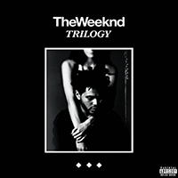

Image by Kim Erlandsen from Flickr.
The Weeknd, born as Abel Tesfaye, is a Canadian rhythm and blues singer, songwriter and producer. He released three mixtapes in 2011 – House of Balloons, Thursday and Echoes of Silence – and later released a compilation album, Trilogy, in 2012 that consisted of those mixtapes. In 2013, he released his first studio album, Kiss Land, followed by his second album, Beauty Behind the Madness, in 2015. A year later, he released his current album Starboy, which has a different sound compared to his previous albums. The Weeknd has won two Grammy awards, eight Billboard Music Awards, two American Music Awards and nine Juno Awards. Until recently, his most recognizable trait was his unique hairstyle, which was inspired by Jean-Michael Basquiat. However, he cut it in 2016 to go along with the change in his music, which clearly draws inspiration from artist like Michael Jackson and Prince. His music is powerful, with lots of bass and haunting echoes. He has a wide variety of songs that range from rap to more funk. The Weeknd is a true artist in a music industry that’s filled with the same bubblegum songs. Listen to a few of his songs below.
Click on an album cover to listen to a sample of one of the album's songs.
Wicked Games by The Weeknd
Kissland by The Weeknd
The Hills by The Weeknd
Starboy by The Weeknd